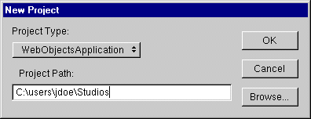

Choose ProjectNew.
In the Project Path field of the New Project panel, type the file system path where the project is to reside.
Give the project the name "StudioManager" by typing this as the last component of the path.
Select WebObjectsApplication from the Project Type pop-up list.
Click OK to create the project.
To name the project and give it a directory location, you can either use the Browse button to navigate to the directory in which you want to put the new project, or you can type the full path in the Project Path field. The item selected from the Project Type pop-up list causes Project Builder to include all frameworks and supporting files necessary for that type of project.